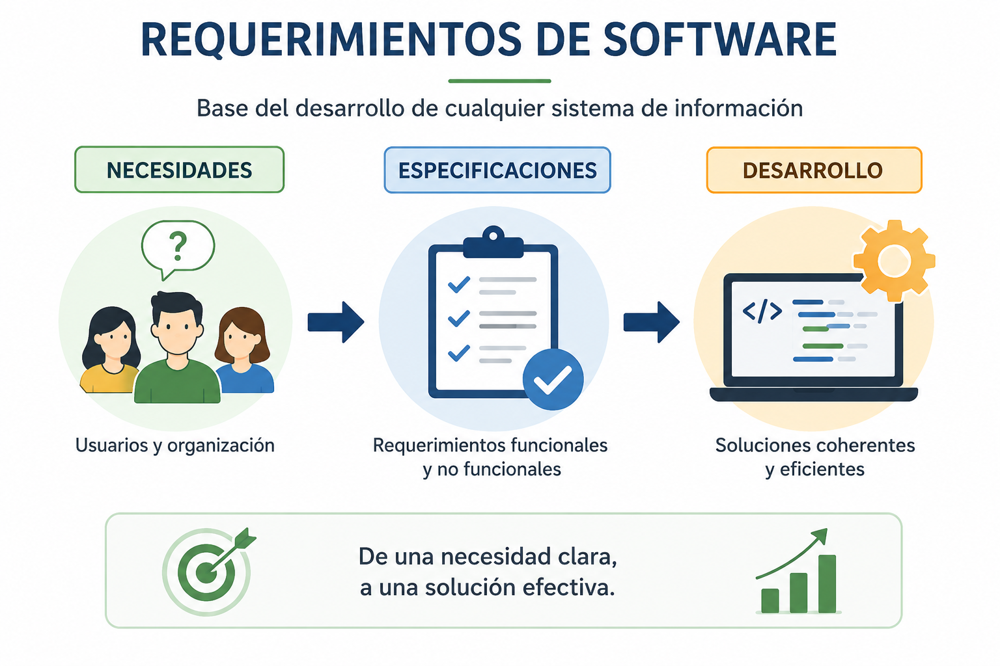

Requerimientos de Software
Imagina que quieres construir una casa 🏠. ¿Empezarías a poner ladrillos sin tener un plano claro? ¿Sin saber cuántos cuartos necesitas? ¿Sin definir si quieres jardín o garaje? ¡Por supuesto que no! Primero necesitas un plan detallado.
En el mundo del software pasa exactamente lo mismo. Los requerimientos de software son ese plano, esa guía fundamental que define qué debe hacer el sistema, cómo debe comportarse y qué necesita para funcionar correctamente. Son la base de cualquier desarrollo exitoso 💻.

Un requerimiento bien definido es la diferencia entre un proyecto que funciona y uno que falla. De hecho, según estudios del CHAOS Report, hasta el 45% de los problemas en proyectos de software tienen su raíz en fallas en el análisis de requisitos. ¡Casi la mitad! 😱
✨ En este OVA aprenderás a transformar necesidades vagas en requerimientos claros, completos y verificables. ¡Prepárate para ser el arquitecto de sistemas exitosos! 🚀
Objetivos de aprendizaje
- 🎯 Comprender qué son los requerimientos de software y su importancia como base del desarrollo de cualquier sistema de información.
- 🔍 Identificar y diferenciar requerimientos ambiguos, incompletos, inconsistentes y no verificables, aprendiendo a transformarlos en requerimientos claros, completos, consistentes y verificables.
- ⚖️ Aplicar técnicas de priorización de requerimientos utilizando matrices de impacto y urgencia para enfocar esfuerzos en lo más crítico.
- 📊 Diferenciar entre requerimientos funcionales y no funcionales, identificando los tipos principales de requerimientos no funcionales (rendimiento, seguridad, usabilidad, disponibilidad, escalabilidad, compatibilidad).
- ✅ Crear requerimientos verificables que puedan ser probados y validados mediante casos de prueba específicos.

Actividades Prácticas
🎯 Actividad 1: Transforma requerimientos ambiguos
A continuación se presentan tres requerimientos ambiguos. Tu misión es transformarlos en requerimientos claros y específicos.
🎯 Actividad 2: Completa el requerimiento
El siguiente requerimiento está incompleto. Agrega los elementos faltantes para hacerlo completo.
🎯 Actividad 3: Priorización de requerimientos
Analiza los siguientes requerimientos y asígnales la prioridad correcta según su impacto y urgencia.
🎯 Actividad 4: Clasificación de requerimientos
Clasifica cada requerimiento como funcional o no funcional, y si es no funcional, indica su tipo.
🏆 Puntaje Total de Actividades
¡Completa todas las actividades para desbloquear la insignia de maestro de requerimientos!
Evaluación
Pon a prueba tus conocimientos sobre requerimientos de software con este quiz de 8 preguntas. ¡Demuestra lo que has aprendido! 🎯
🏆 Resultado
Recursos de aprendizaje
-
Guía de Requisitos de Software - IEEE
Estándar internacional para la especificación de requisitos de software.
Ir al recurso -
CHAOS Report - Standish Group
Estudio sobre el éxito y fracaso de proyectos de software.
Ir al recurso -
ISO/IEC 25010 - Calidad del Software
Estándar para modelos de calidad de producto de software.
Ir al recurso
Bibliografía
- IEEE Std 830-1998. (1998). IEEE Recommended Practice for Software Requirements Specifications. IEEE Computer Society.
- Pressman, R. S. (2014). Software Engineering: A Practitioner's Approach (8th ed.). McGraw-Hill.
- Sommerville, I. (2015). Software Engineering (10th ed.). Pearson.
- Standish Group. (2020). CHAOS Report 2020.
- ISO/IEC 25010:2011. (2011). Systems and software engineering — Systems and software Quality Requirements and Evaluation (SQuaRE) — System and software quality models. International Organization for Standardization.